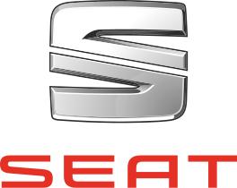
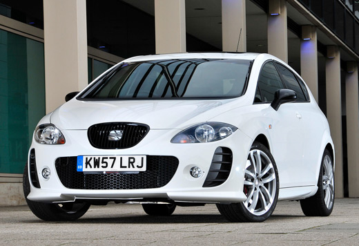

|
Istorie Politică Comunități autonome Mediul înconjurător Economie Demografie Bucătăria spaniolă Seat |
SEATSEAT (ˈseɪat) (Sociedad Española de Automóviles de Turismo) este un constructor spaniol de automobile, înființat în 1950 cu sprijinul Fiat, aflat în prezent în portofoliul grupului Volkswagen. Acronimul „SEAT” provine de la Sociedad Española de Automóviles de Turismo (Societatea spaniolă de automobile turisme). După începerea producției la 5 iunie 1953, primul automobil ieșit de pe bandă a fost consemnat la data de 13 noiembrie același an. Inițial, SEAT producea modele Fiat sub emblemă proprie, modele care aveau diferențe vizuale minime față de produsele companiei mamă. SEAT Panda (redenumit mai târziu Marbella), spre exemplu, se baza pe Fiat Panda. SEAT 600, bazat pe Fiat 600, a fost prima mașină pentru multe familii spaniole și a devenit un simbol al „Miracolului economic spaniol”. După retragerea constructorului italian, primul automobil apărut sub noua emblemă SEAT a fost Ronda. Ulterior, grupul Volkswagen a semnat un acord de cooperare cu societatea spaniolă, urmând să devină acționar majoritar în 1986 și finalmente acționar unic al companiei în 1990. La ora actuală, SEAT promovează o imagine agresivă prin mașini sport ca Ibiza și León, fiind o marcă destinată tinerilor. Compania a fost fondată în 1950 de „Institutul național spaniol de industrie” (INI) cu scopul de a populariza uzul de automobile în Spania postbelică și de a fabrica mașinile grupului Fiat, principalul constructor italian de automobile, sub licență. Primul președinte al companiei a fost José Ortiz Echagüe. Statul spaniol a păstrat o participație importantă în societate. La retragerea Fiat în 1986, Grupul Volkswagen a achiziționat pachetul majoritar de acțiuni și a devenit în 1990 unicul acționar, prin cumpărarea participațiilor păstrate de statul spaniol. Ruptura de Fiat, care furniza designul și tehnologia, a adus compania spaniolă într-o situație foarte dificilă. Dimensiunile reduse ale companiei au împiedicat dezvoltarea acesteia pe cont propriu, fapt care a determinat inițierea unui șir de negocieri ce a implicat principalele companii europene, dar și constructorii japonezi Toyota și Nissan. Tratativele au culminat în 1982 cu un acord de cooperare industrială, licență și asistență tehnică încheiat cu Grupul Volkswagen, pentru o perioadă de șapte ani. |